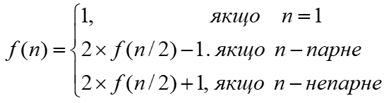
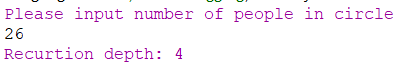
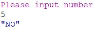
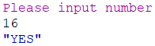

Задача 9.1
По колу стоять n людей, яким присвоєні номери від 1 до n. Починаючи відлік з першого і рухаючись по колу, кожна друга людина виходитиме з кола доти, поки не залишиться одна. Нехай номер того, хто залишився, x. Потім по колу стоятиме x людей і процедура виходу з колу людей повторюватиметься доти, поки не залишиться одна людина з номером y. Ці процедури повторюватимуться доти, поки номер тої людини, що залишиться, не стане рівним первинній кількості людей в потоковому раунді. Визначити номер людини, яка залишилася, і кількість повторів процедури. Номер людини f(n), що залишилася, обчислюється за рекурентним співвідношенням:
Визначити глибину рекурсії.
Racket — мова програмування загального призначення, що базується на мові Scheme і належить до сімейства мов Lisp. Хоча Racket бере за основу мову Scheme і підтримує виконання програм R5RS та R6RS Scheme, мова Racket має свої розширення і відмінності і підтримує різні парадигми програмування. Однією з особливостей Racket є можливість створення на її основі спеціалізованих мов зі своїм спеціалізованим синтаксисом без потреби використання якихось зовнішніх інструментів на кшталт препроцесорів. Також мова має систему модулів та можливість об'єктно-орієнтованого програмування.
Код програми
#lang racket
;=================================Task 1==========================
(define (task1 n)
(define (get_recurtion_depth n i)
(if (= n 1)
i
(get_recurtion_depth (quotient n 2) (+ i 1))
))
(get_recurtion_depth n 0)
)
(display "Please input number of people in circle\n")
(define amount (string->number (read-line)))
(printf "Recurtion depth: ~a\n"
(task1 amount))
Результати роботи програми
Задача 9.2
Увести з клавіатури натуральне число n. Вивести слово YES, якщо число n є точним степенем двійки, або слово NO в іншому випадку. Операцією зведення в степінь користуватися не можна!. Контрольний тест: уведено число 8, отриманий результат: YES.
Код програми
#lang racket
;=================================Task 2==========================
(define (task2 n)
(if (= n 1)
"YES"
(if (= (remainder n 2) 0)
(task2 (/ n 2))
"NO")))
(display "Please input number\n")
(define n (string->number (read-line)))
(task2 n)
Результати роботи програми
 Github link
Висновок
Після проведеної роботи було реалізовано дві подібні програми. Одна знаходить глибину рекурсії програми без використання самої програми, тому що глибина рикурсії цієї програми дорівнює найбільшому степеню двійки меншого за дану кількість людей в колі. Друга програма показує чи є дане число степенем двійки. Найбільшою складністю було дійти до найпростішого рішення першої програми.